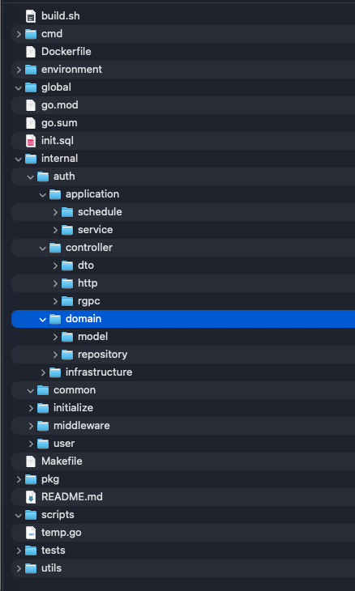

Professional Summary
Senior Backend Developer with over 8 years of experience architecting and delivering high-throughput, scalable backend systems. Specialized in Node.js (NestJS, Express) and PHP (Laravel, Apiato, Symfony) ecosystems with hands-on research and practical implementation in Go (Golang) for high-concurrency workloads. Strong expertise in Microservices architecture, distributed systems, monorepo patterns, database optimization (MongoDB, MySQL, PostgreSQL, DynamoDB, Redis), asynchronous event-driven messaging (Kafka, RabbitMQ), and DevOps delivery (AWS, Docker, Kubernetes, GitLab CI/CD, ArgoCD). Proven leadership experience in sprint planning, technical architecture, and mentoring engineering teams.
Technical Skills
Backend
Databases & Caching
Message Brokers & Queues
Cloud & DevOps
Frontend Knowledge
Integrations & Leadership
Professional Experience
ECO DMS (NestJS Monorepo Architecture):
- Led a backend engineering team of 6 members; drove technical architecture decisions, sprint planning, task delegation, and PR code reviews.
- In charge of developing and maintaining core services within the monorepo architecture: Web & Mobile API Gateways, Web Portal, Data Synchronization Service (real-time sync across retail nodes), Scheduled Job Worker Services, and KPI Reporting Engine.
- Designed scalable MongoDB schemas for distribution network data and leveraged Redis for multi-layer caching and query optimization.
- Implemented asynchronous event-driven workflows using RabbitMQ (Work Queue model) and Kafka to offload heavy operations (data synchronization, batch reporting, audit logging) from client-facing services.
- Containerized services using Docker and collaborated on CI/CD deployment workflows with GitLab CI, Kubernetes, and ArgoCD.
DMS90 (White-Label Modular Platform):
- Maintained and evolved the DMS90 platform, structured with sub-repositories to package modular white-label distribution solutions for enterprise clients using PHP (Apiato framework) and ReactJS.
- Acted as Senior Developer maintaining and resolving critical bugs across the Web Portal; integrated centralized log messaging and error tracking with automated real-time alert notifications to Slack.
Project description: Uqey is an innovative 24/7 keyless car-rental platform operating across Japan (Okinawa, Fukuoka, etc.), enabling users to reserve, unlock, and return vehicles directly via a mobile app without physical paperwork or keys.
- Developed and maintained backend RESTful APIs and frontend interfaces supporting the end-to-end user rental journey, vehicle telemetry integration, and reservation lifecycle without paperwork.
- Built and optimized backend services using PHP (Laravel), DynamoDB, and AWS cloud infrastructure.
- Collaborated with BRSE, Comtor, and cross-functional teams to analyze technical requirements, decompose sprint tasks, and review code.
- Proposed optimization solutions spanning both frontend (VueJS) and backend components.
- High-Concurrency Systems (Golang): Self-studied and engineered Go (Golang) backend services for e-commerce and high-traffic booking platforms; leveraged core Go concurrency primitives (goroutines, channels/select, sync.Mutex, context package) to optimize throughput and handle concurrent loads of 30k–40k QPS.
- E-commerce & Web Applications: Built and enhanced e-commerce backend APIs using Node.js (Express.js) and MongoDB.
- System Maintenance & Upgrades: Maintained and upgraded legacy client web applications and CMS systems built with PHP (Laravel, CakePHP) and MySQL.
Key Projects Delivered:
- FreePlus: Airbnb-like travel & hotel booking platform developed with Laravel, ReactJS, and MySQL.
- Winboard: Enterprise HR & personnel management system built with ReactJS and Laravel.
- Jeca Japan & MitsuiFood JP: Product management and exhibition event showcase platforms developed with CakePHP and MySQL.
Responsibilities:
- Led engineering teams (4–7 members), allocated resources, planned sprint timelines, and supervised end-to-end technical delivery.
- Actively architected and engineered core backend RESTful APIs during foundational project phases; provided continuous technical support and code reviews across backend and frontend.
- Built real-time chat service using Firebase and JavaScript; conducted technical interviews and mentored team members.
Project description: TransportMe is a comprehensive bus fleet management and ticketing operations platform in Australia, providing real-time fleet tracking, automated ticketing, and reporting across passenger transport networks.
- Developed and maintained the web management portal and backend RESTful APIs powering two dedicated mobile applications: passenger ticketing app and driver operations app.
- Designed relational database schemas (MySQL) and built robust API endpoints supporting ticketing, route management, and passenger transactions.
- Integrated real-time features using Firebase and implemented error tracking and crash reporting with Bugsnag.
- Deployed and managed backend cloud services on AWS infrastructure.
- Key Japanese Projects: of-tokyo.jp (Office leasing and rental portal in Tokyo), chumap.jp (Parking lot search & lookup map platform), and internal enterprise information management systems.
- Developed backend APIs, CMS features, and database schemas using PHP (CakePHP, CodeIgniter, Zend Framework 2.x), MySQL, jQuery, and Bootstrap for Japanese clients.
Featured Projects
Retail Distribution Management System
Enterprise distribution management platform for brands and manufacturers, covering web and mobile API gateways, web management portals, real-time data synchronization, scheduled background jobs, and KPI reporting.
- Architecture: NestJS monorepo comprising multiple microservices and shared @app/* libraries for high-throughput distribution operations.
- Data & Messaging: MongoDB schemas as single source of truth, Redis caching, RabbitMQ Work Queue and Kafka workflows for event-driven asynchronous processing.
- DevOps & Delivery: GitLab CI/CD pipelines, containerized with Docker, deployed to Kubernetes, and managed via ArgoCD across multi-pod services.
- Team Leadership: Managed a backend team of 6 engineers, driving sprint planning, architecture, task breakdown, and code reviews.
High-Concurrency Go Service (Domain-Driven Design)
Modular, high-performance Go backend structured under Domain-Driven Design (DDD) and Clean Architecture principles. Designed for enterprise-scale microservices requiring ultra-low latency, strict boundary separation, and seamless protocol delivery.
- Domain Isolation & Core Purity: Independent domain layer (domain/model, domain/repository) encapsulating pure business entities and repository contracts with zero external dependencies.
- Bounded Contexts: Modular feature packages (internal/auth, internal/user) encapsulating dedicated application services, DTOs, controllers, and infrastructure adapters.
- Multi-Protocol Delivery: Unified controller delivery layer supporting both RESTful HTTP handlers (controller/http) and high-throughput gRPC services (controller/grpc) with strongly-typed DTO validation.
- Application & Scheduled Tasks: Orchestrated application use cases (application/service) and background workers (application/schedule) decoupling business logic from execution triggers.
- Enterprise Infrastructure & Tooling: Automated SQL schema provisioning (init.sql), multi-stage containerization (Dockerfile, build.sh), environment configurations (environment/), and Make automation (Makefile).

Education & Recognition
Languages
Vietnamese (native) · English — comfortable reading and writing technical English; conversational.